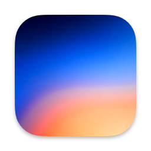
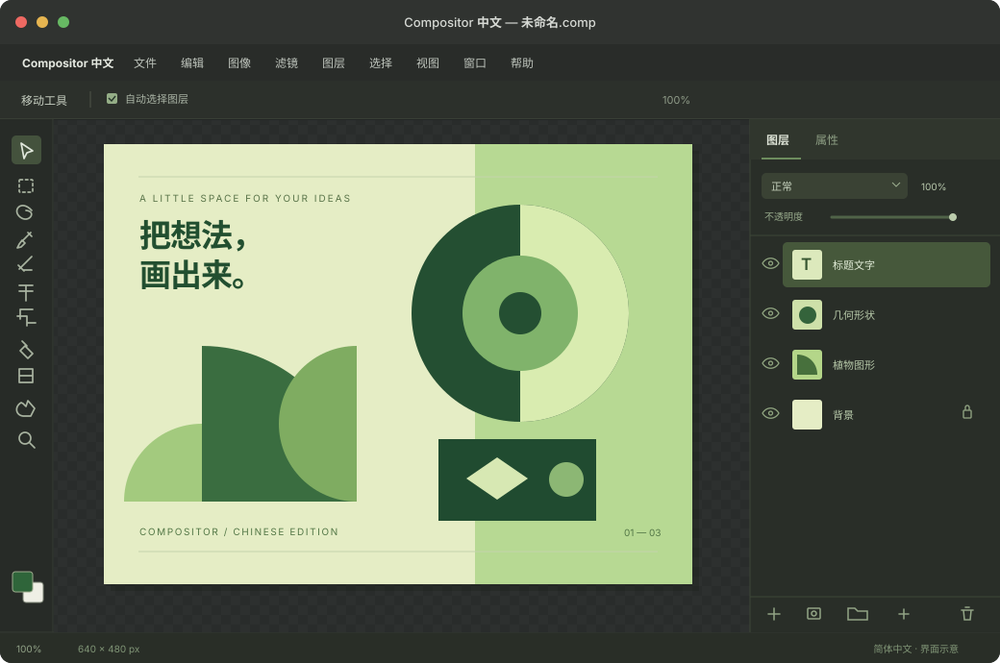

熟悉的术语
画笔、选区、图层、蒙版与混合模式使用常见中文表达。工具提示和对话框也一并适配。
正片叠底剪贴蒙版高斯模糊

Compositor 中文版
把注意力留给作品
从第一张画布，到最后一次导出。
画笔、选区、图层、蒙版与混合模式使用常见中文表达。工具提示和对话框也一并适配。
按 ⌘F，直接输入中文关键词。搜索“高斯”，找到对应的滤镜与调整操作。
保留原版 .comp 工程格式与内部标识。语言设置可切换简体、繁体与英文，重启后生效。
解压后，把“Compositor 中文.app”拖到“应用程序”文件夹。
首次启动默认简体中文。在“设置 → 通用 → 语言”中切换其他语言。
发布包使用本地签名，未经 Apple 公证。macOS 可能要求确认开发者来源；请核对下载来自本仓库 Releases。详细操作见 安装指南。
这是非官方社区中文构建。Compositor 1.4.7 没有可加载汉化插件的接口，因此采用源码适配、独立编译的方式。中文版基于 Kelvin 的社区本地化方案，补充了 1.4.7 的界面翻译。
中文版使用独立应用名称与标识，可与原版并存，自定义快捷键设置独立保存。界面术语被翻译，工程文件中的稳定标识保留原样；默认生成的图层名称可能是中文。
主要菜单、工具、图层面板、命令搜索、提示及对话框已适配。型号、DPI、sRGB、单位、快捷键符号与用户内容保留原文。部分底层或系统提示可能仍显示英文或系统语言；繁体中文尚未经过完整母语审校。
中文版不自动安装官方更新。新的原版版本需要重新适配。仓库提供完整源码、构建脚本与翻译校验；本地构建需要原版 Compositor 1.4.7 的资源，以及适配的 Apple 开发工具。详见 构建说明。
在 GitHub Issues 中提供中文版版本、macOS 版本、复现步骤和原文。也欢迎提交翻译改进；分享截图前请移除私人文件内容。
感谢 Robbie Tilton / Wonder Assembly LLC 的 Compositor，以及 Kelvin 的中文本地化工作。